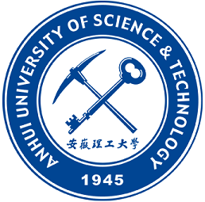

Qinghao Zhuang 庄庆昊
Institute of Advanced Technology，University of Science and Technology of China
|
|


About
Qinghao earned his bachelor's degree from AUST in 2013. After graduation, he worked in the industry for three years, involving himself in fields such as mechanics and online education. Later, he pursued and acquired a master's degree from USTC-SSE. He is a diligent and persistent person, constantly striving for success and exploring the unknown in life.
Education
|  | Anhui University of Science and Technology,Bachelor School of Mechanical Engineering 2009-2013 |
| University of Science and Technology of China,Master School of Software Engineering 2017-2020 |
|
Employment
| Institute of Advanced Technology，University of Science and Technology of China,Robotics Engineer Research Laboratory for Service Robotics 2020-now |
|
| Institute of Advanced Technology，University of Science and Technology of China,Robotics Engineer(Intern) Research Laboratory for Service Robotics 2019.02-2020.06 |
|
| AutoChips,Intern AutoChips Inc 2018.07-2018.12 |
|
Project
| Multimodal Emotional Interaction Bionic Panda Robot Chengdu Giant Panda Museum 2022.01-2023.01 This project is aimed at creating a realistic-looking giant panda robot, which is capable of multi-modal emotional interaction with visitors for the needs of the giant panda museum. The robot has the following functions: Tour guide service The same appearance as the giant panda Multimodal emotional interaction Self-selected emotional and action responses based on visitor interaction |
||||
| Tour guide panda robot Chengdu Giant Panda Museum 2020.11-2021.12 The project is aimed at making a giant panda robot that moves and interacts autonomously in a complex pedestrian environment for the needs of the giant panda museum. The robot has the following functions: Long-term robust localization Navigation in dense crowds Tour guide service Multi-sensor fusion security strategy |
||||
| Robot Software and Hardware Mobile Platform Technology Cooperation Project Huawei 2019.02-2020.05 The project is aimed at design a robot that can navigate autonomously in the home environment and focus on the daily life of the elderly care. The robot has the following functions: Navigation in the home environment Multi-sensor fusion security strategy Pedestrian detection and tracking Take care of the elderly |
||||
| Kejia Robot Robotics Lab,University of Science and Technology of China 2019.02-now | [TDP] | [Poster] | [Report] | |
Others
-
Robot Technology Standard Innovation Base
Participate in the construction of the base and assist in the completion of the base acceptance process
-
Ethics Workgroup,CAAI
Responsible for the construction of website
Responsible for the daily management and external communication
Participate in the group's online course training and complete the video production of the course
Participated in the group's book writing assignment from the Ministry of Education
© Qinghao Zhuang 2023-06